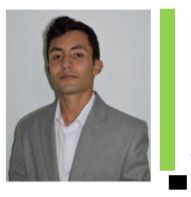

CRISTIAN LEONARDO SUAREZ PADILLA |  |
INGENIERO PROGRAMADORTeléfono 3125472912Fecha nacimiento: 11 Jun 1991 Cédula: 1.022.968.545 criss.suarez19@gmail.com |
|
PERFILEn mi recorrido profesional, he participado en la implementación de diferentes Sistemas de información (Litisoft, Jurilex, Vigía Judicial) desarrollados para firmas Jurídicas y bancos, ser partícipe de dichas implementaciones me permitió adquirir la experiencia suficiente para el manejo de herramientas como Visual Studio .Net, C#, CSS, HTML, Bootstrap y Transact – SQL. Adicionalmente, tengo experiencia en manejo de proyectos mediante metodologías ágiles como scrum. Por lo tanto, las oportunidades a nivel profesional que he obtenido en el trascurso del tiempo, me han permitido fortalecer, mejorar y ampliar mis aspectos éticos y profesionales, por otra parte, soy organizado, eficiente, proactivo y me caracterizo por el trabajo en equipo, con iniciativa de seguir ampliando mi campo laboral, permitiéndome reforzar mis conocimientos actuales e incrementar de manera exponencial las oportunidades de aprendizaje que conllevan los nuevos retos. |
|
ESTUDIOS
Año: 2019 Titulo: Técnico Programación de Software. |